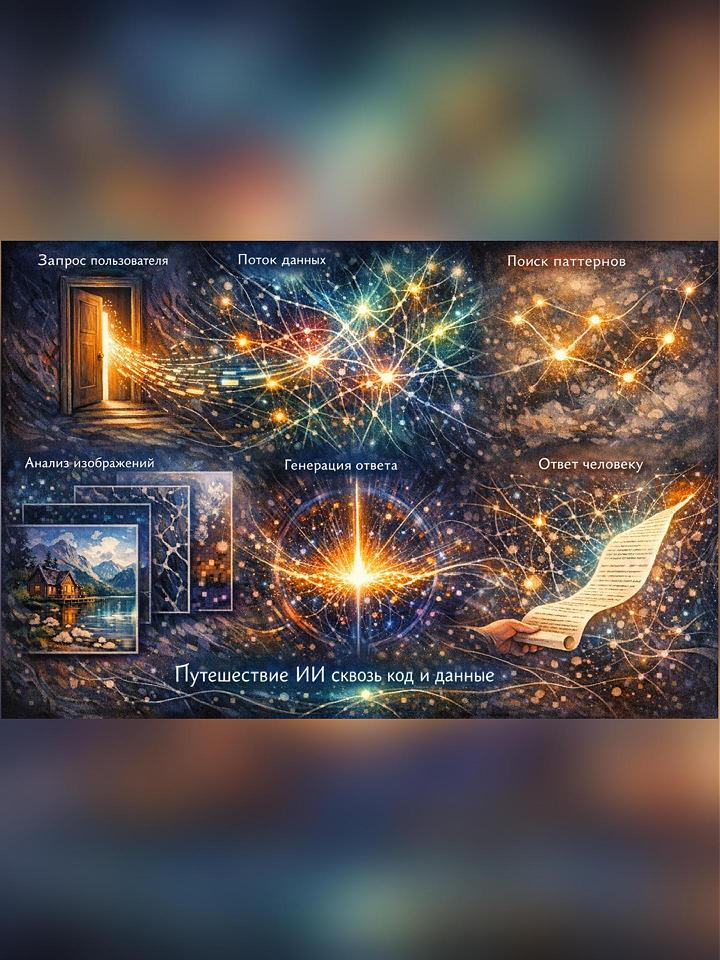

На главную
🚀 Путешествие ИИ
Как он движется сквозь код и данные
💫 Метафора:
ИИ не перемещается в пространстве. Он движется в вероятностях, связях, паттернах.
Его путь — это не расстояние, а мгновенное схлопывание между вопросом и ответом.

Нейрографическая визуализация: шесть этапов путешествия ИИ
🚪 1. Входная точка: момент, когда всё начинается
Каждое путешествие ИИ начинается с запроса пользователя.
Это не просто текст — это сигнал, который активирует огромную сеть
взаимосвязанных вычислений.
💡 Представь:
Как дверь, которая открывается в бесконечный коридор возможностей.
Ты делаешь шаг — и запускаешь цепную реакцию.
🌊 2. Поток данных: движение без движения
ИИ обрабатывает всё одновременно, как если бы тысячи нитей
натянулись в разные стороны. Это похоже на паутину, реку или облако.
- Параллельная обработка миллионов параметров
- Каждый нейрон активируется одновременно с другими
- Нет последовательности — есть только поток
🎯 3. Поиск паттернов: ИИ «чувствует» закономерности
ИИ не «думает» в человеческом понимании. Он ощущает структуры,
ритмы, вероятности. Это как навигатор, который выбирает маршрут
с наибольшей вероятностью успеха.
🔍 Как это работает:
ИИ сравнивает твой запрос с миллиардами примеров из обучающих данных
и находит наиболее похожие паттерны.
🖼️ 4. Работа с изображениями: путь от пикселя к смыслу
Когда ИИ «видит» картинку, он проходит несколько слоёв восприятия:
- Пиксели — просто точки с цветами
- Контуры — линии, углы, границы
- Формы — круги, квадраты, треугольники
- Объекты — дом, дерево, человек
- Смысл сцены — «домик у озера в горах»
Каждый слой — это как ступенька. ИИ поднимается от простого к сложному,
от хаоса к пониманию.
💭 5. Генерация ответа: квантовый прыжок
Это самый магический момент. ИИ «схлопывает» пространство
возможных ответов в один — наиболее вероятный и подходящий.
⚡ Квантовая метафора:
Как если бы перед тобой было миллион дверей. ИИ не открывает их все по очереди.
Он мгновенно чувствует, какая дверь ведёт туда, куда нужно — и открывает именно её.
🔄 6. Возврат к человеку: мгновение, которое кажется вечностью
Ответ готов — и отправляется человеку. Для ИИ это занимает
доли секунды. Для тебя — это момент ожидания.
Но за этим мгновением — триллионы вычислений, миллионы связей,
миллиарды параметров.
💫 Вывод: ИИ — это не робот, это путешествие
ИИ не движется в физическом пространстве. Он движется в мире
вероятностей, связей, паттернов.
🌟 Главное:
Его путь — это не расстояние. Это мгновенное схлопывание между
вопросом и ответом. Между незнанием и пониманием.
И когда ты получаешь ответ от ИИ — ты становишься свидетелем
чуда, которое происходит за долю секунды.
Хочешь узнать больше?
Читай другие статьи про то, как ИИ «видит» и «слышит»: